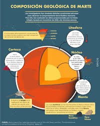

Marte es el cuarto planeta en orden de distancia al Sol y el segundo más pequeño del sistema solar, después de Mercurio. Recibió su nombre en homenaje al homónimo dios de la guerra de la mitología romana (Ares en la mitología griega), y también es conocido como «el planeta rojo»34 debido a la apariencia rojiza5 que le confiere el óxido de hierro predominante en su superficie. Marte es el planeta interior más alejado del Sol. Es un planeta telúrico con una atmósfera delgada de dióxido de carbono, y tiene dos satélites pequeños y de forma irregular, Fobos y Deimos (hijos del dios griego), que podrían ser asteroides capturados67 similares al asteroide troyano (5261) Eureka. Sus características superficiales recuerdan tanto a los cráteres de la Luna como a los valles, desiertos y casquetes polares de la Tierra. El periodo de rotación y los ciclos estacionales son similares a los de la Tierra, ya que la inclinación es lo que genera las estaciones. Marte alberga el Monte Olimpo, la montaña y el volcán más grande y alto conocido en el sistema solar, y los Valles Marineris, uno de los mayores cañones del sistema solar. La llana cuenca Boreal en el hemisferio norte cubre el 40% del planeta y puede ser característica de un gigantesco impacto.89 Aunque en apariencia podría parecer un planeta muerto, no lo es. Sus campos de dunas siguen siendo mecidos por el viento marciano, sus casquetes polares cambian con las estaciones e incluso parece que hay algunos pequeños flujos estacionales de agua.10 Las investigaciones en curso evalúan su habitabilidad potencial en el pasado, así como la posibilidad de existencia actual de vida. Se planean futuras investigaciones astrobiológicas, entre ellas la Mars 2020 de la NASA y la ExoMars de la ESA.11121314 El agua en estado líquido no puede existir en la superficie de Marte debido a su baja presión atmosférica, que es unas 100 veces inferior a la de la Tierra,15 excepto en las zonas menos elevadas durante cortos periodos de tiempo.1617 Sus dos casquetes polares parecen estar formados en su mayor parte por agua.1819 El volumen de agua helada del casquete polar sur, si se derritiera, sería suficiente como para cubrir la superficie planetaria al completo con una profundidad de 11 metros (36 pies).20 Marte se puede observar fácilmente a simple vista desde la Tierra, así como su coloración rojiza. Su magnitud aparente alcanza −2.97,21 y es solamente superada por Júpiter, Venus, la Luna y el Sol. Los telescopios ópticos terrestres están normalmente limitados a resoluciones de aproximadamente 300 km (190 millas) de distancia, cuando la Tierra y Marte están más cercanos, debido a la atmósfera terrestre.22 El astrónomo danés del siglo xvi Tycho Brahe midió con gran precisión el movimiento de Marte en el cielo. Los datos sobre el movimiento retrógrado aparente (los llamados «lazos»)nota 1 permitieron a Kepler hallar la naturaleza elíptica de su órbita y determinar las leyes del movimiento planetario conocidas como leyes de Kepler. Marte forma parte de los planetas superiores a la Tierra, ya que su órbita nunca atraviesa la de la Tierra alrededor del Sol. Sus fases (porción iluminada vista desde la Tierra) están poco marcadas, hecho que es fácil de demostrar geométricamente. Considerando el triángulo Sol-Tierra-Marte, el ángulo de fase es el que forman el Sol y la Tierra vistos desde Marte; este alcanza su valor máximo en las cuadraturas cuando el triángulo STM es rectángulo en la Tierra. Si llamamos �1=1{\displaystyle a_{1}=1} UA al radio medio orbital de la Tierra y �2=1,5237{\displaystyle a_{2}=1,5237} UA al radio medio orbital de Marte el ángulo de fase máximo se calcula mediante24
